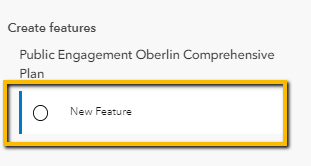

How-To Guide on Feature Editing
- Select "New Feature"

- Place pin on desired area of the map.
- Fill out any relevant attribute information and select "Create"

- Select "Select" undert the Edit Features section

- Select desired feature you want to update
- Select "Update" when you are finished and want to save your changes

- Select the element with the blue vertical bar under the Edit Features section

- At this point the blue indicator bar should be gone. You can do the same thing for the "Select" under
the Edit Features element